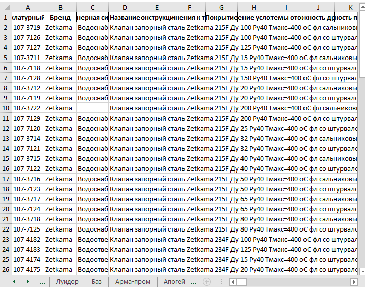
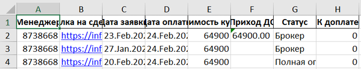

This parser I'm using on my current position. I decided to work smarter not harder, that's why this parser exists.
How the parser works:
- It gathers html code from website;
- Collects necessary data from html code;
- Presents Excel sheet with necessary data.

I developed parser for my friend, who didn't want to do annoying job. In the link on GitHub you can find good writed technical documentation.
How the parser works:
- By API-key it logs in the AMO CRM account;
- It takes an e-mail from message via TG-bot;
- Findes lead profile with e-mail;
- Takes all information from lead profile;
- Send the report by TG-bot;
- Example of report:

Examples of my current html layout